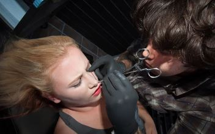

Jane Doe on Tatuointiliikkeen kokeneempi tatuoija. Hän tekee mielellään fine-line tatuointeja, mutta kaikenlaiset mustavalkokuvat onnistuvat. Jane on itseoppinut tatuoija ja taiteilija, ja hänen töitään myymmekin tatuointien teon ohessa. Jos kaipaat mustetta ihollesi ja sinulla on jo kuva mielessäsi lähetä viitekuvia sähköpostitse, Jane on sinuun yhteydessä. Jos ideasi on vielä epäselvä, vastaa Jane myös suunnitteluajoista.
Hei! Olen John, Tatuointiliikkeen lävistäjä ja toinen tatuoija. Olen tehnyt tatuointeja jo muutaman vuoden, joten kokemusta on ehtinyt kertyä hieman. Lisäksi vastaan nettisivujemme päivittämisestä. Teen tatuointeja harvemmin ajanvarauksella, joten Walk-In päivinä kannattaa tulla paikalle jos haluaa taidetta minulta!